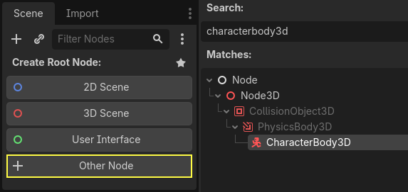
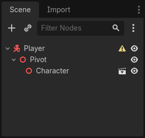
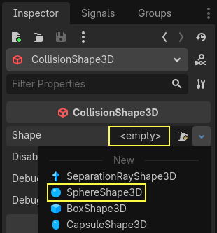
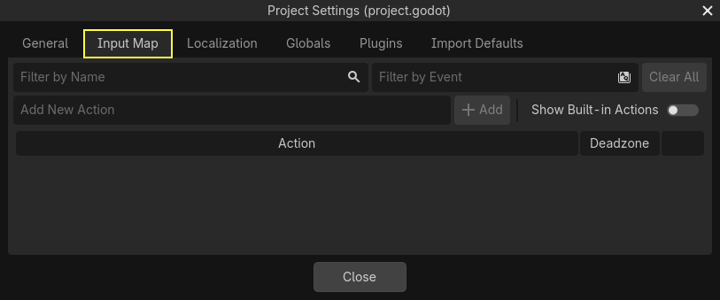

Open Godot
Launch the editor, then choose Create.
Game Design & Development · 50–70 minutes · Grades 9–12
Godot is a free, open-source game engine. In this lesson, you will learn its visual language and build a tiny 3D room with a player you can move.
Finish line: a lit 3D room, a player with collisions, and four-direction movement.
Main: the root node that holds the whole room together.
Launch
Before you build
Launch the editor, then choose Create.
Use First3DRoom and choose an easy-to-find folder.
It works on more classroom computers and is required for a future web export.
Editor
Four places, four jobs
Try it: click each editor area above. Then say its job without looking.
Mental model
Godot's grammar
One object with one main job: camera, light, sound, shape, timer, or script.
Camera3DA saved tree of nodes. A player, level, menu, or enemy can each be a scene.
player.tscnA message a node emits when something happens. Other nodes can listen and react.
button.pressedInstructions attached to a node. Godot's beginner-friendly language is GDScript.
player.gdA node is like one specialized brick. A scene is a saved model. A script tells a brick how to act. A signal lets one part announce, “Something happened!”
Toolbox
The pattern behind every object
Godot has no Car3D or Building3D class. Every solid-looking thing — a building, a car, a coin — is a small parent-child stack: a body node tells physics how to treat it, a MeshInstance3D gives it a visible shape, and a CollisionShape3D gives that shape a physical boundary. Swap the body type and the same two-node shape+collision pair becomes a wall, a wrecking ball, or a trigger zone. Pick an object to see its stack.
Click a node above to see its job.
Empty container
Groups and positions other nodes. Draws nothing, has no physics — a plain parent to move a whole group at once.
Give it a shape
Renders a mesh: a primitive like BoxMesh/SphereMesh, or an imported model. Purely visual — no physics of its own.
Fixed world geometry
Never moves during play: floors, walls, buildings. Other bodies collide with it, but it ignores gravity and pushes.
Fully simulated
Real physics: falls, bounces, gets knocked around by other bodies. Use for crates, balls, debris — anything physics should drive.
Moved by code
Collides like a solid body, but you move it yourself in a script with move_and_slide(). Players and enemies.
Detects, doesn't collide
Bodies pass straight through it. Emits signals like body_entered — pickups, damage zones, level triggers.
Give it a boundary
Pairs with a body or Area3D above it. Needs a Shape resource (Box, Sphere, Capsule…) in the Inspector, or the body has no physical presence.
Light like the sun
Parallel rays from one direction, no matter where it sits. One per outdoor scene is usually enough.
Light like a bulb
Radiates outward from a point in every direction. Lamps, torches, glowing pickups.
Light in a cone
A directional cone, like a flashlight or a car headlight. Aim it with rotation.
Frame the shot
The viewpoint rendered to the game window. Only one Camera3D can be Current at a time.
Give it sound
Positional audio — volume fades and pans with distance from the listener, unlike a flat AudioStreamPlayer.
A Texture is an image. A Material is a resource describing how a surface reacts to light, and it holds a texture. You assign a Material to a MeshInstance3D's surface in the Inspector — there is no separate node to add for color or texture.



Screenshots: Godot Engine documentation, © Juan Linietsky, Ariel Manzur and the Godot community, CC BY 3.0.
Build
Hands on
Choose 3D Scene. Rename the root Main, then save it as main.tscn.
Add StaticBody3D. Give it a MeshInstance3D with a BoxMesh and a CollisionShape3D with a BoxShape3D. Scale it wide and flat.
Add CharacterBody3D, rename it Player, then add a MeshInstance3D and CollisionShape3D beneath it. Move Player above the floor.
Add DirectionalLight3D. Rotate it until you can see shadows and shape.
Add Camera3D. Move it back and up, angle it toward the room, and make sure Current is enabled.
main.tscn.Script
Make it move
Open Project → Project Settings → Input Map. Add four actions and bind the keys shown. Action names keep your code readable and make gamepads easier to add later.

move_forwardSmove_backAmove_leftDmove_right
Attach a new script named player.gd to the Player node. Replace its contents with:
extends CharacterBody3D
@export var speed := 5.0
func _physics_process(delta):
var input := Input.get_vector(
"move_left", "move_right",
"move_forward", "move_back"
)
var direction := Vector3(input.x, 0, input.y)
velocity.x = direction.x * speed
velocity.z = direction.z * speed
if not is_on_floor():
velocity.y -= 9.8 * delta
move_and_slide()Input.get_vector() combines four named actions into one 2D direction. Pressing opposite keys cancels out.
Play
Test the idea here
Click the room, then use WASD.
The floor or player is missing a CollisionShape3D, or the shapes do not touch.
Check Input Map spelling. Action names must exactly match the strings in the script.
Make sure the floor's collision shape is a child of StaticBody3D.
Read the first red line in the Debugger. It usually points closest to the cause.
Check
Exit ticket
SignalRun_01_Basics. Open the copy once and verify the room, player movement, camera, lighting, and collisions still work.You now have the foundation
Change the player mesh, add obstacles, adjust the speed, or turn the room into a tiny maze. Keep one change at a time, press Play, and observe.